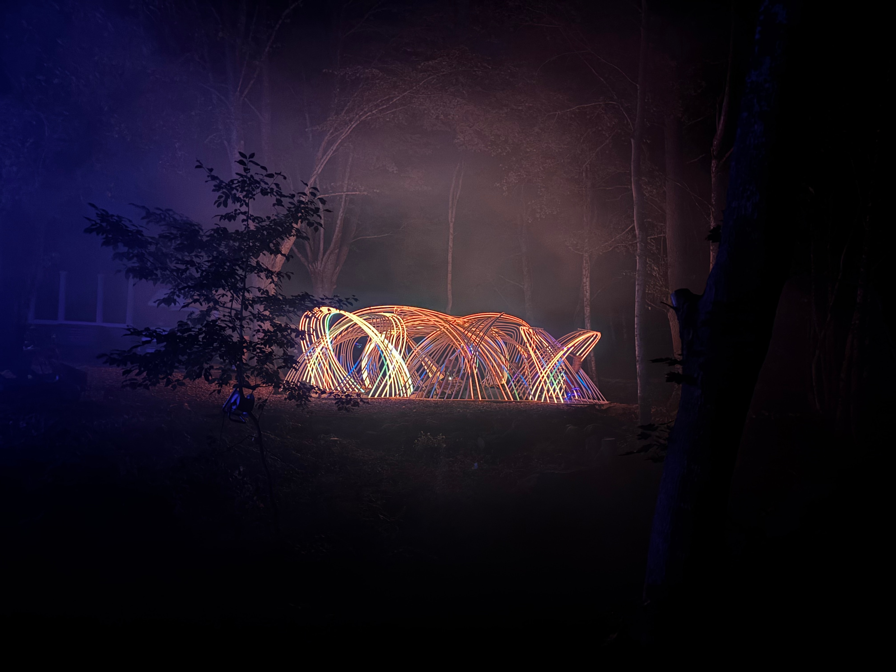
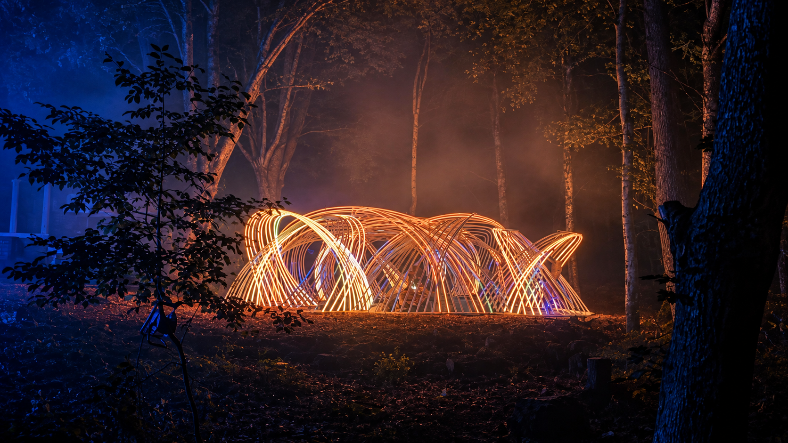
The strongest hero candidate of the three: closer framing and clearer separation between the pavilion and the woods. Foliage, ground texture and fine rib detail are reconstructed.
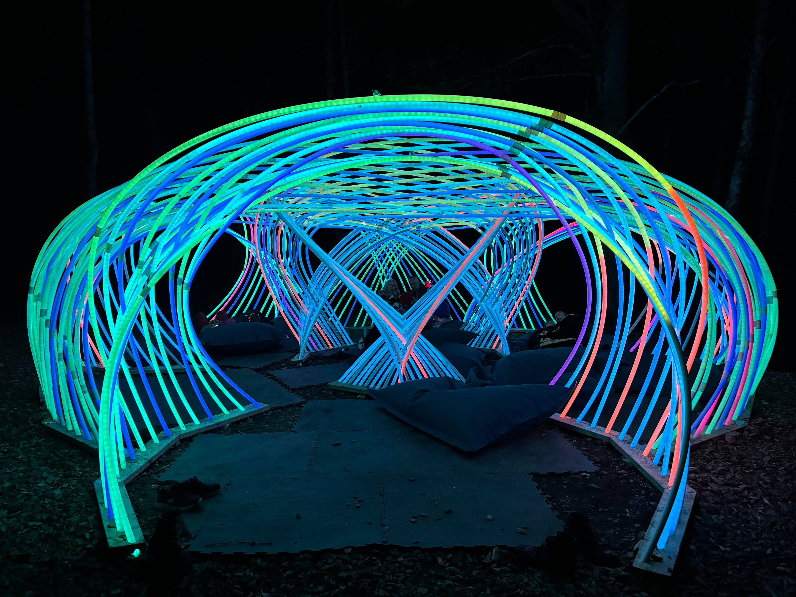
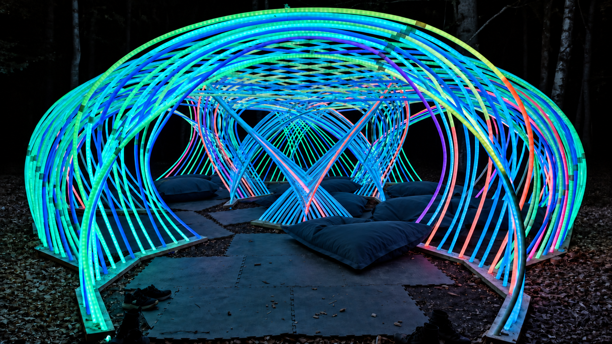
The people have been removed from the refined entrance view, leaving the cushions and woven structure.
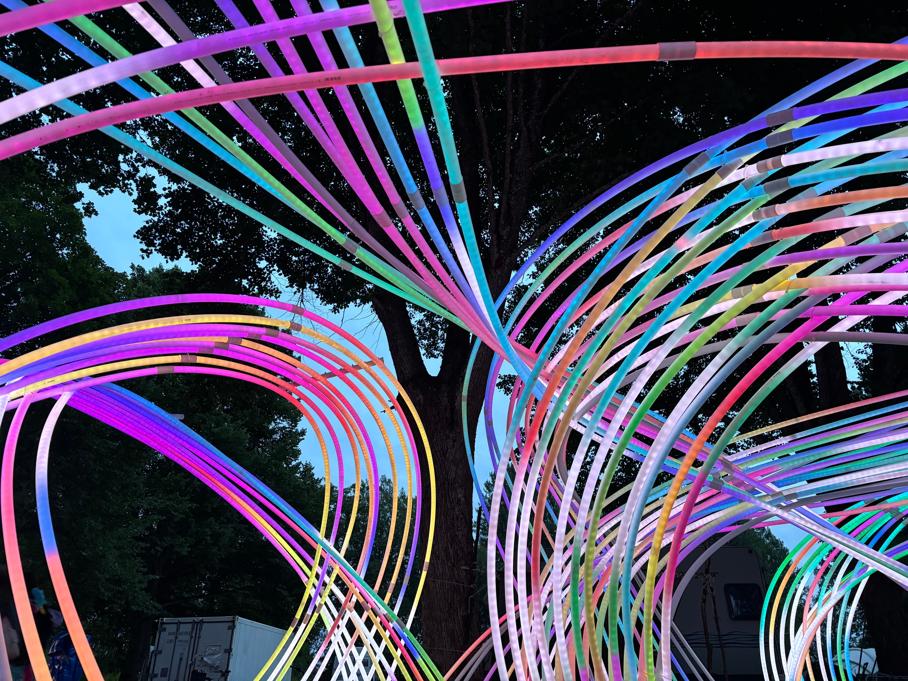
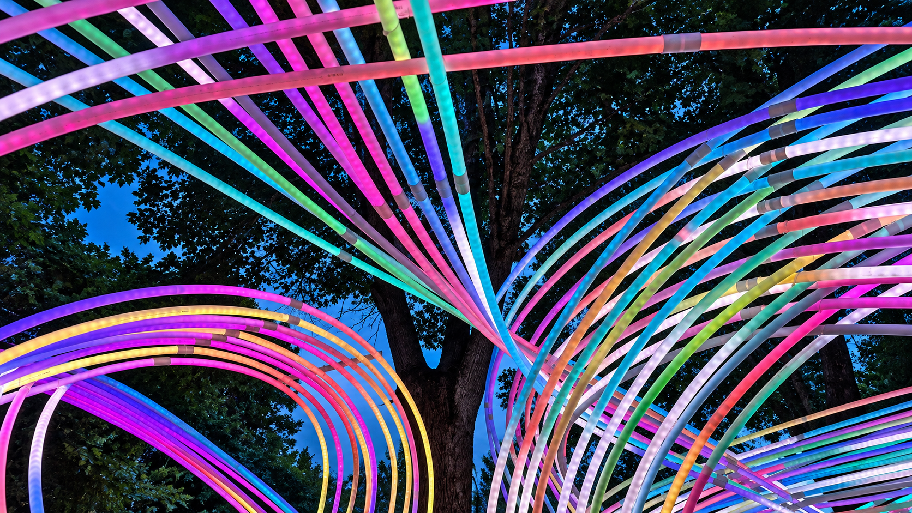
The tighter crop concentrates on the weave and removes the containers from the composition. Fine tube connections and foliage are reconstructed.
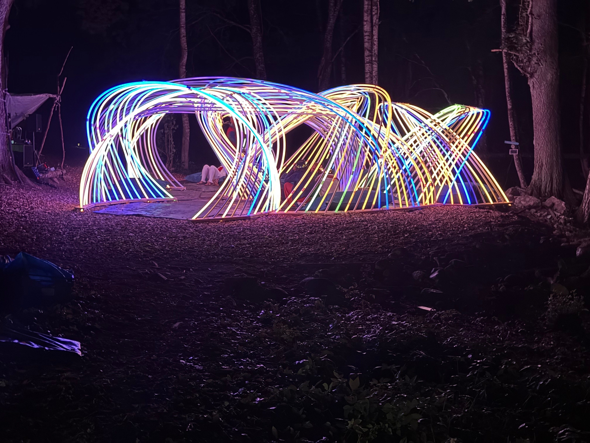
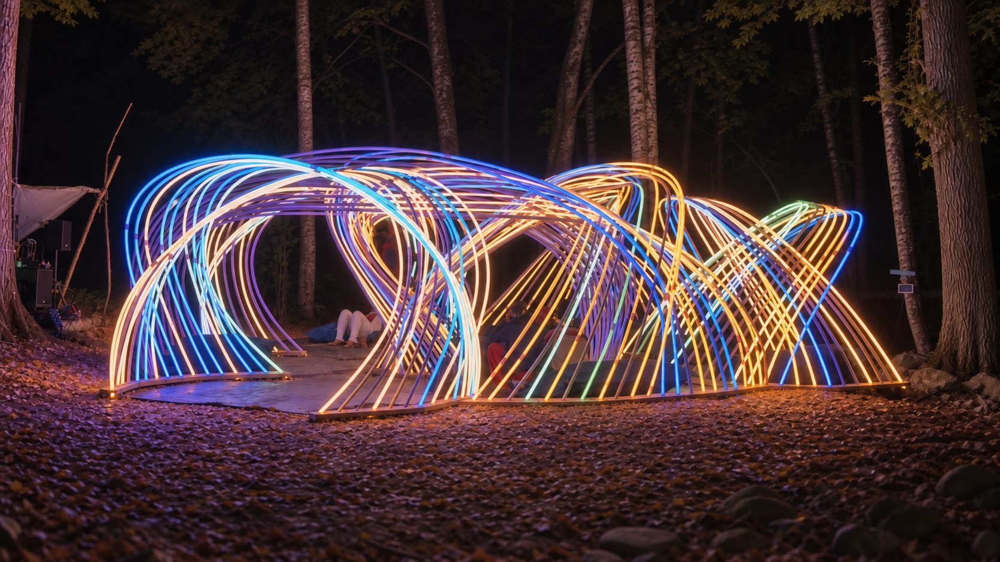
The tighter composition now has softer detail, gentler highlights and less contrast in the woodland floor.
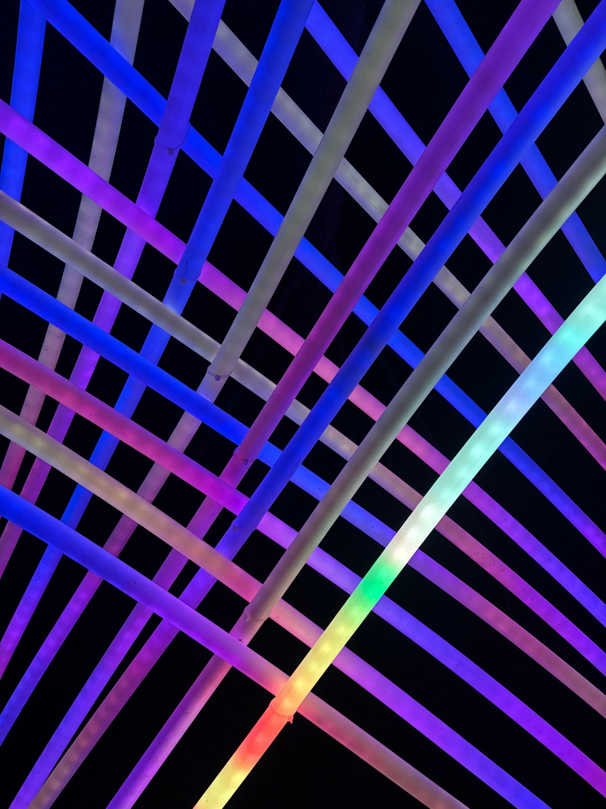
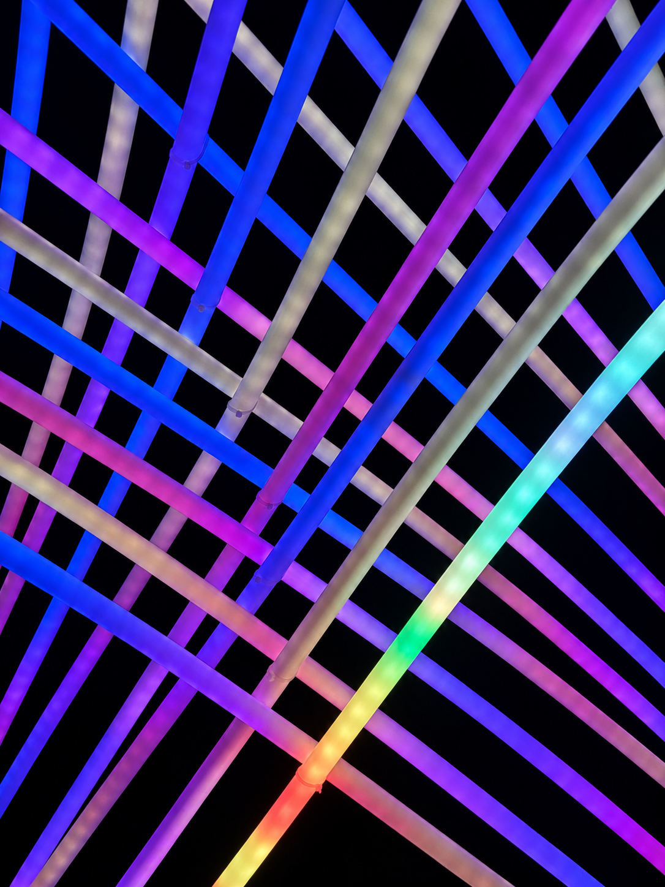
Cleaner light gradients and sharper tube edges, keeping the diagonal composition.
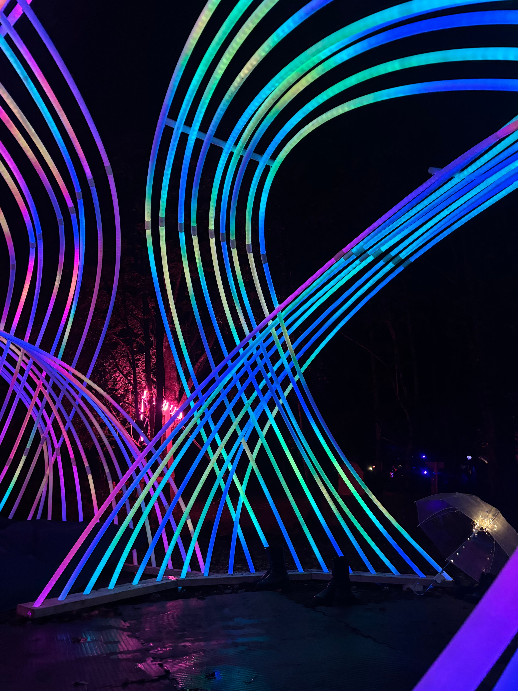
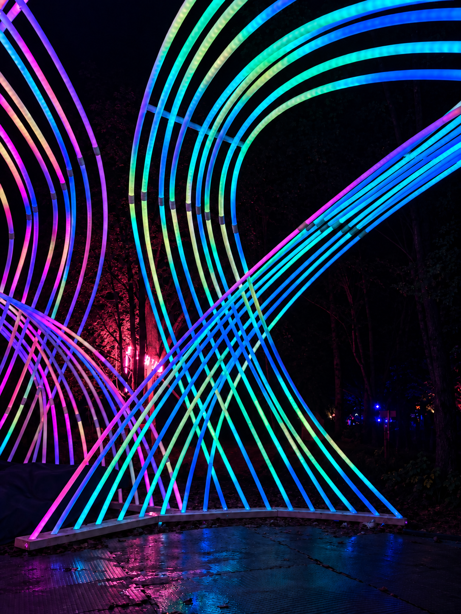
The central sweep is more distinct, with cleaner framing and visible reflections across the floor.